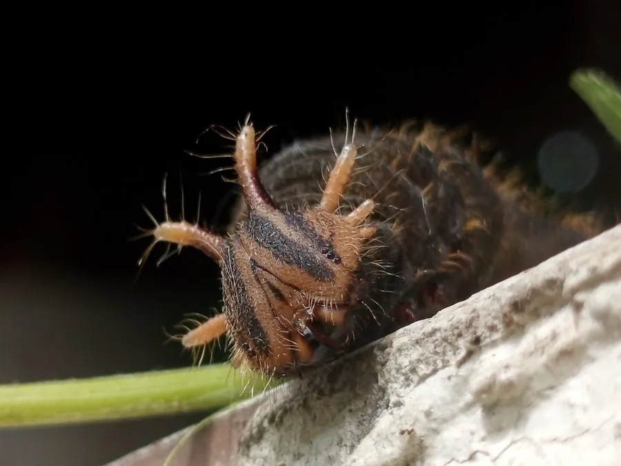

昆虫 · 动物界
猫头鹰环蝶 Caligo eurilochus

翅腹面有巨大猫头鹰眼状斑纹的大型蝴蝶，停歇时宛如猫头鹰注视，靠恐吓天敌自保，是雨林著名的拟态蝴蝶。
- 分类
- 门节肢动物门纲昆虫纲目鳞翅目科蛱蝶科属环蝶属
- 栖息环境
- 热带雨林林下、灌木层与香蕉林，常在树干上停歇
- 地理分布
- 中美洲和南美洲的热带雨林
- 保护级别
- 暂无评估
物种志
猫头鹰环蝶翅展约 12–16 cm，翅面褐色，翅腹面有巨大的同心圆眼斑，中央深黑，外围有黄、褐、黑色环纹，后翅眼斑尤其醒目，停歇在树干上时仿佛一只猫头鹰正盯着来者。翅形宽阔，停歇时几乎遮住整个树干表面。
它生活在热带雨林的林下和灌木层，飞行缓慢，常在树干、竹丛和香蕉叶上停歇，成虫喜欢吸食腐果和树液。幼虫取食芭蕉科、竹芋科等植物叶片，身体带角突。猫头鹰环蝶分布于中美洲和南美洲的雨林，一年发生多代。巨大的眼斑可以吓退鸟类等天敌，是拟态和警戒色研究的经典例子；幼虫寄主多为雨林常见植物，因此在保护区内数量相对稳定，它在雨林生态旅游中也很受关注。
形态与习性
- 食性成虫吸食腐果和树液；幼虫取食芭蕉科植物叶片
- 翅展约 12–16 cm
- 眼斑翅腹面有巨大同心圆眼斑，形似猫头鹰眼
- 防御眼斑可吓退鸟类等天敌
- 生活史一年发生多代，幼虫取食芭蕉科、竹芋科植物
- 分布中美洲和南美洲热带雨林
趣味知识
- 猫头鹰环蝶停歇时，翅腹面的眼斑让人误以为是一只猫头鹰。
- 它主要在雨林下层活动，飞行缓慢，容易在树干上观察。
- 巨大的眼斑是一种警戒色，能吓退试图靠近的鸟类。